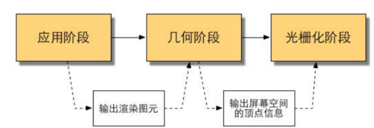
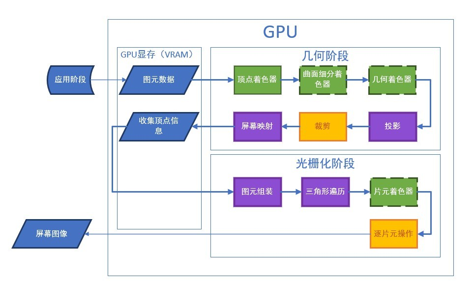

title: 渲染管线Render Pipeline个人理解总结
date: 2024-03-22 20:47:40
categories :
GPU的架构与CPU有极大的不同，这主要归因于两者不同的使用场合。试想一下，GPU面对3D游戏中成千上万的三角面，如果仅仅是跟Cpu一样逐一单个处理计算，损失的效率是极其惊人的。
在渲染流程中，CPU与GPU正如上文一样通力合作渲染图像。在运算过程中，CPU如同进货的卡车不断地将要处理的数据丢给GPU，GPU工厂调动一个个如工人一般的计算单元对这些数据进行简单的处理，最后组装出产品——图像。
渲染管线粗略分为几个步骤：应用阶段-几何阶段-光栅化阶段

渲染管线粗略分为几个步骤：顶点数据的输入、顶点着色器、曲面细分过程、几何着色器、投影，裁剪剔除、屏幕映射， 光栅化、片段着色器以及混合测试

这是一个由CPU主要负责的阶段，且完全由开发人员掌控。在这个阶段，CPU将决定递给GPU什么样的数据（譬如渲染目标场景中的灯光、场景的模型、摄像机的位置），有时候还会对这些数据进行处理（譬如只递给GPU可以被摄像机看见的元素，其他不可见的元素被剔除（culling）出去），并且告诉GPU这些数据的渲染状态（譬如纹理、材质、着色器等）。
我们同样用工业流水线进行类比，这一块相当于工厂的产品进口部门，采购员（CPU）联系发货单位（RAM）订购想要的原材料（数据），并经过一番精挑细选拿出自己满意的材料（数据处理，如剔除），把这些材料连同他们的加工方式（如应当使用的着色器）丢给工厂。值得注意的是，由于这一块采购员是与发货单位的商人而不是工厂里的工人交流， 所以他可以使用更复杂的语言（如高级程序语言）与商人讨价还价，而不是像在工厂中向工人发号施令时使用的指令（着色器语言）。
所做的工作：
应用阶段的主要任务是把 顶点数据、shader、贴图、材质球、灯光以及一些设置等等传入GPU的过程，这个过程叫做 DrawCall
（1）把数据加载到显存：将数据加载到显存中能使GPU更快的访问这些数据，当把数据加载到显存后，便可以释放了数据，但一些数据仍需留在内存中，如CPU需要网格数据进行碰撞检测。
（2）设置渲染状态：渲染状态的一个通俗解释就是，定义了场景中的网格是怎样被渲染的。例如，使用哪个顶点着色器/片段着色器、光源属性、材质等。如果不设置渲染状态，那所有的网格将使用同一种渲染，显然这是不希望得到的结果。
（3）调用Draw Call：当所有的数据准备好后，CPU就需要调用一个渲染指令告诉GPU，按照上述设置进行渲染，这个渲染命令就是Draw Call。Draw Call命令仅仅指向被渲染的图元列表，而不包含任何材质信息
Unity DrawCall 内部分为 SetPassCall 和 Batch，
SetPassCall的作用是设置渲染管线的上下文，一般每一种Unity里的Material就是一个SetPassCall，
Batch就是每一次CPU向GPU打包发送顶点数据的批次，当我们优化性能的时候经常会用到（动态）合批，合批就是将拥有两个相同的材质（材质实例也要相同）的物体同时传入GPU进行处理。
负责大部分多边形操作和顶点操作，将三维空间的数据转换为二维空间的数据。
这一个由GPU主导的阶段，也就是说，从这个阶段开始，我们进入了上文所说的“流水线”。几何阶段将把CPU在应用阶段发来的数据进行进一步处理，而这个阶段又可以进一步细分为若干个流水线阶段，可以类比理解为工厂流水线上进行的一道道工序。
流程图中展现了几何阶段中几个常见的渲染步骤（不同的图像应用接口存在着些许不同，这里以OpenGL为例），其中，绿色表示开发者可以完全编程控制的部分，虚线外框表示此阶段不是必需的，黄色表示开发者无法完全控制的部分（但可以进行一些配置），紫色表示开发者无法控制的阶段（已经由GPU固定实现）。
顶点着色器的处理单位是顶点，但是每次处理都是独立的，因此无法创建或销毁任何一个顶点，也不能得到与其他顶点的关系
顶点着色器主要功能是进行坐标变换。将输入的局部坐标变换到世界坐标、观察坐标和裁剪坐标。
虽然我们也会在顶点着色器进行光照计算(称作高洛德着色)，然后经过光栅化插值得到各个片段的颜色，但这种得到的光照比较不自然，所以一般在片段着色器进行光照计算
曲面细分是利用镶嵌化处理技术对三角面进行细分，以此来增加物体表面的三角面的数量，是渲染管线一个可选的阶段
在这个阶段，开发者可以控制GPU对顶点进行增删改操作
屏幕映射的任务就是将每个图元的x、y值变换到屏幕坐标系，对于z坐标不做任何处理（实际上屏幕坐标系和z坐标一起构成窗口坐标系），这些值会被一起传递到光栅化阶段
一般来说，屏幕坐标是2D的概念，只用于表示屏幕XY坐标，而窗口坐标是2.5D的概念，它还带有深度信息，也就是经过变换后的Z轴的信息。
使用齐次坐标的意义，其实就是为了正确记录下投影变换前(观察空间)中物体的深度信息，也就是Z坐标的值。
GPU将顶点从摄像机观察空间转换到裁剪空间（又被称为齐次裁剪空间），为之后的剔除过程以及投射到二维平面做准备。
常见的投影方式有透视投影与正交投影。
在三维中原有的三个分量x、y、z上又额外增加了w=1分量，使得可以通过矩阵乘的方式为三维坐标实现平移的效果。
只有当图元部分或全部位于视椎体内时，我们才会将它送到流水线的下个阶段，也就是光栅化阶段。对于部分位于视椎体的图元，位于外部的顶点将被裁剪掉，而且在视椎体与线段的交界处产生新的顶点。
在把不需要的顶点裁剪掉后，GPU需要把顶点映射到屏幕空间，这是一个从三维空间转换到二维空间的操作。
对于透视裁剪空间，GPU需要对裁剪空间中的顶点执行齐次除法（将齐次坐标系中的w分量除x、y、z分量），得到顶点的归一化的设备坐标（NDC）
通过透视除法后，我们得到了NDC坐标，获得NDC坐标是为了实现屏幕坐标的转换与硬件无关。
正交裁剪空间只需要把w分量去掉即可。
此时顶点的x、y坐标接近于在屏幕上所处的位置了，此时z分量不会被丢弃而是被写入了深度缓冲（z-buffer）
决定每个渲染图元中哪些像素应该被绘制在屏幕上，它需要对上一阶段得到的逐顶点数据进行插值
到此，GPU也只是完成了渲染的一半工作，因为现在我们只是得到了一些顶点，他们还不是能被显示在屏幕上的像素。
有些资料把这个过程称为图元组装（Primitive Assembly），不过个人认为叫做Primitive Assembly更为贴切。这个过程做的工作就是把顶点数据收集并组装为简单的基本体（线、点或三角形），通俗的说就是把相关的两个顶点“连连看”，有些能构成面，有些只是线，有些甚至没有与之配对的顶点只能当一个“单身狗”。
这个过程将检验屏幕上的某个像素是否被一个三角形网格所覆盖，被覆盖的区域将生成一个片元（Fragment）
片元不是真正意义上的像素，而是包含了很多种状态的集合（譬如屏幕坐标、深度、法线、纹理等）
而片元的划分依据（像素块被覆盖到何种程度才被划分）不管怎么样都会产生锯齿，这就有许多抗锯齿的采样方式（比如MSAA）
片段着色器
片元着色器的输入是上一个阶段对顶点信息进行插值的结果（是根据从顶点着色器输出的数据插值得到的），而它的输出是像素颜色值
这个阶段我们能进行很多渲染技术，比如根据顶点法线或者UV计算颜色，接受阴影或者是进行纹理采样（纹理坐标是通过前述阶段的顶点数据插值得到的）
对每个片元进行操作，将它们的颜色以某种形式合并，得到最终在屏幕上像素显示的颜色。主要的工作有两个：对片元进行测试（Test）并进行合并（Merge）。
测试步骤决定了片元最终会不会被显示出来，这个阶段是高度可配置的
如果一个片元通过了所有测试，就需要把这些片元的颜色值和颜色缓冲中已有的颜色值进行混合。
裁切测试
在裁剪测试中，允许程序员开设一个裁剪框，只有在裁剪框内的片元才会被显示出来，在裁剪框外的片元皆被剔除。
透明度测试
在透明度测试中，允许程序员对片元的透明度值进行检测，仅仅允许透明度值达到设置的阈值后才可以会绘制。在OpenGL3.1后这个API被删除了，但你可以在片元着色器中实现类似的效果。
模板测试
模板测试通常用来限制渲染的区域，渲染阴影，轮廓渲染等
在模板测试中，GPU将读取片元的模板值与模板缓冲区的模板值进行比较，比较函数由开发者指定，如果比较不通过，这个片元将被舍弃
深度测试
现实生活中，近的物体会遮挡住远处的物体，深度缓冲就是用来实现这种效果的。
GPU将读取片元的深度值（就是我们前面留下来的坐标z分量）与缓冲区的深度值进行比较，和模板测试一样，如何渲染物体之间的遮挡关系也是自定义的（可以让GPU把没有被遮挡的部分隐藏了，让被遮挡的部分显示出来的。）
大量的被遮挡片元直到深度测试阶段才会被剔除，而在此之前它们同样地被计算，这占用了GPU大量的资源。
因此有种优化技术是将深度测试提前（Early-Z）。但这带来了与透明度测试的冲突，例如某个片元甲虽然遮挡了另一个片元乙，但甲却是透明的，GPU应当渲染的是片元乙，这就产生了矛盾，这就是透明度测试会导致性能下降的原因